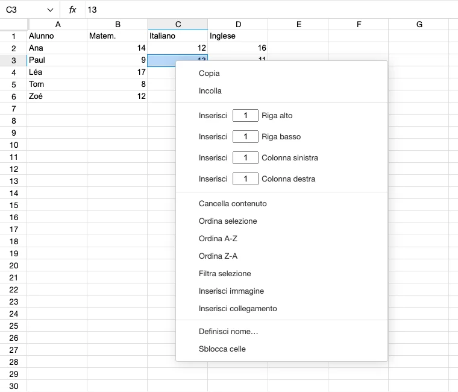

Righe e colonne
Dimensione
| Azione | Effetto |
|---|---|
| trascinare il bordo destro dell’intestazione di una colonna | cambia la sua larghezza |
| trascinare il bordo inferiore dell’intestazione di una riga | cambia la sua altezza |
| clic destro sull’intestazione › Larghezza colonna, Altezza riga | dimensione in pixel, per tutte le colonne o righe selezionate |
Inserire, eliminare
Clic destro in una cella o su un’intestazione: Inserisci 1 Riga alto, Inserisci 1 Riga basso, Inserisci 1 Colonna sinistra, Inserisci 1 Colonna destra. Il numero si scrive nel campo. Clic destro su un’intestazione: Elimina selezione Riga, Elimina selezione Colonna.

Le formule sono adattate: i loro riferimenti seguono le celle spostate. Il limite è di 10 000 righe e 1 000 colonne.
Nascondere
Clic destro sull’intestazione › Nascondi selezione Riga, Nascondi selezione Colonna. Le celle nascoste sono ancora calcolate. Per mostrarle di nuovo, selezionare le intestazioni intorno, poi clic destro › Mostra.
Bloccare
Righe e colonne bloccate restano visibili durante lo scorrimento. Selezionare la cella limite, poi o Visualizza › Blocca:
| Comando | Restano visibili |
|---|---|
| Blocca fino alla riga corrente | le righe fino a quella della cella, compresa |
| Blocca fino alla colonna corrente | le colonne fino a quella della cella, compresa |
| Blocca fino alla cella corrente | entrambe |
| Annulla blocco | nulla di particolare |
Per tenere la riga di intestazione: clic su una cella della riga 1, Blocca fino alla riga corrente.